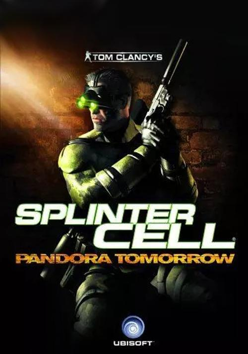
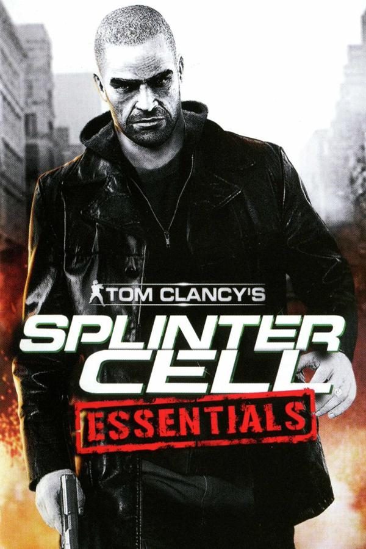
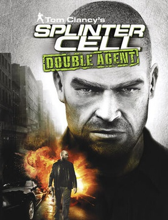
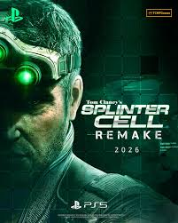

¿Quién es Sam Fisher?
Ex Navy SEAL y actual agente de Third Echelon, Fisher es el espía definitivo. Entrenado en combate, tecnología y sigilo, es la punta de lanza en operaciones encubiertas.
Momentos clave
-
Tom Clancy's Splinter Cell (2002)

- Tom Clancy's Splinter Cell: Pandora Tomorrow (2004) 
-
Tom Clancy's Splinter Cell: Chaos Teoria (2005)

- Tom Clancy's Splinter Cell: Essentials (2006) 
- Tom Clancy's Splinter Cell: Doble Agente (2006) 
-
Tom Clancy's Splinter Cell: Conviction (2010)

-
Tom Clancy's Splinter Cell: Blacklist (2013)

- Tom Clancy's Splinter Cell: Remake (2026) 
Curiosidades
- Su icónico visor tiene visión nocturna y térmica.
- Inspiró misiones de sigilo en juegos modernos.
- Michael Ironside dio su voz a Fisher en varios títulos.
Adelanto Splinter Cell Remake (2025)
Tráiler oficial del remake anunciado por Ubisoft.